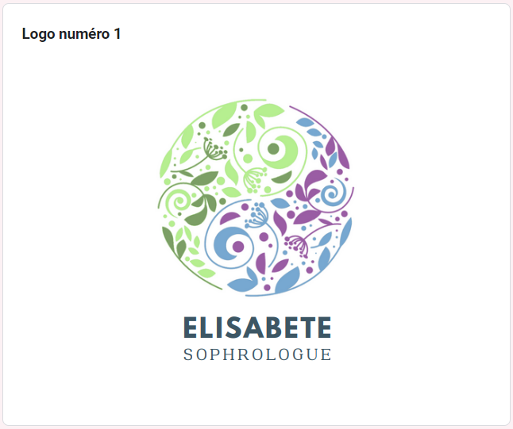
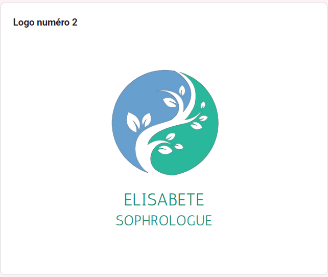
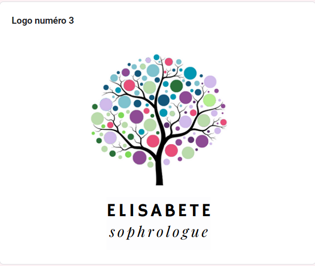
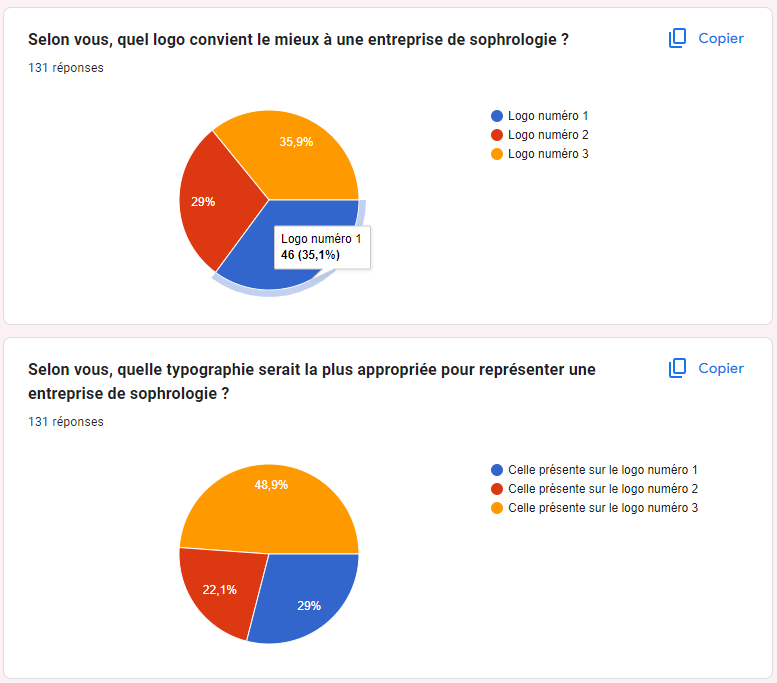
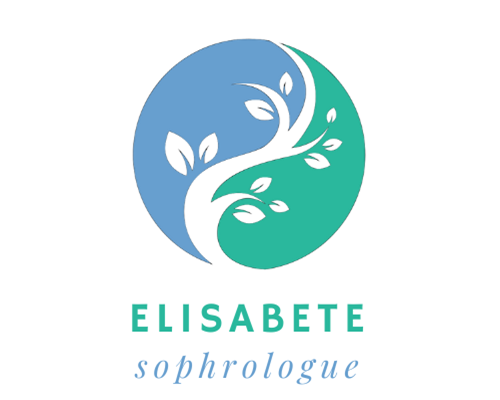
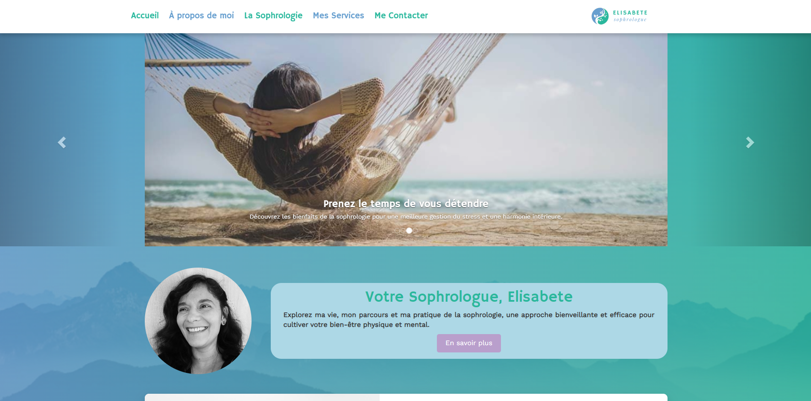
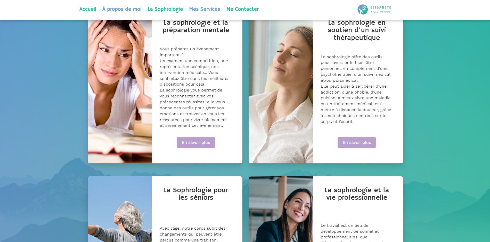
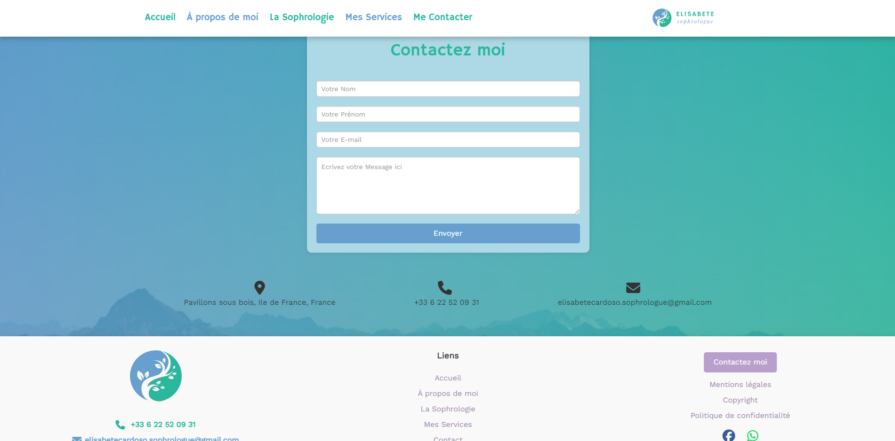

Elisabete Sophrologue
Voir plusDeveloppement - Projet Entreprise
Site Elisabete Sophrologue
Dans le cadre de mon stage lors de mon parcours en BTS SIO, j'ai eu l'opportunité de concevoir et de développer un site vitrine dédié à la sophrologie pour l'entreprise Elisabete Sophrologue.
Ce projet avait pour objectif de fournir à Elisabete une plateforme en ligne professionnelle pour informer ses clients actuels et potentiels sur les différents services de sophrologie qu'elle propose.
Objectifs du projet
Pour commencer, il a fallu crée toute l'identité numérique et la charte graphique de l'entreprise, tout en étant en corrélation avec l'univers de la sophrologie.
Cela englobe la création du logo, le choix des couleurs sur le site ainsi que le choix des images présentes.
Ensuite, le principal objectif était de créer un site intuitif et informatif permettant aux visiteurs de comprendre les bienfaits de la sophrologie et les services offerts par Elisabete.
Nous voulions également mettre en avant sa personnalité et son expertise, tout en facilitant le contact avec elle.
Étude sur l'identité numérique de l'entreprise
Enquête quantitative
En collaboration avec une étudiante en Master Marketing, nous avons réalisé une étude quantitative approfondie sur les logos et les typographies.
Cette enquête avait pour but de choisir le logo le plus adapté et en adéquation avec l'image de l'entreprise.
Pour ce faire, nous avons fait découvrir à un échantillon de 131 individus le concept de la sophrologie via un texte réalisé par Elisabete; puis les personnes avaient le choix entre trois logos differents afin de choisir celui qui correspondait le plus à la sophrologie.
La direction artistique du site a été pensée pour refléter les valeurs de la sophrologie, favorisant la sérénité et l'harmonie visuelle.
Voici le formulaire en question




Choix du logo et des couleurs
Pour le choix du logo nous avons pris en compte les votes du public dans l'enquête quantitative tout en restant sur les préférences la sophrologue Elisabete qui cherchait un logo qui reste simple.
Nous avons opté pour un logo rappelant à la foi la nature, le Yin et le Yang ainsi que du vert et du bleu que nous avons décidé de garder dans la charte graphique pour la conception du site, toutes ses caractéristiques rerésentent bien la sophrologie.
Nous avons aussi choisi avec détail la typographie du logo car nous la voulions présente sur le site et nous voulions qu'elle soit lisible.

Conception du site
Technologies Utilisées
Le site a été créé en utilisant HTML, CSS, JavaScript et PHP, et j'ai intégré des bibliothèques comme Bootstrap pour faciliter la gestion du contenu.
J'ai également optimisé la compatibilité et l'accessibilité du site en utilisant des outils de développement web, garantissant une expérience fluide sur une variété de navigateurs et d'appareils.
HTML
HTML, sigle pour HyperText Markup Language, est le langage de base pour la création de sites Web. Il utilise des balises pour structurer et présenter le contenu, comme les titres, les paragraphes, les liens, etc. Ces balises sont encadrées par des chevrons ("<" et ">"). En combinant HTML avec d'autres technologies comme CSS et JavaScript, les développeurs peuvent créer des sites Web dynamiques et interactifs.
Javascript
JavaScript est un langage de programmation crucial pour le développement web, permettant la création d'applications interactives et dynamiques. Avec sa syntaxe intuitive, il offre aux développeurs la possibilité de manipuler le contenu des pages et d'interagir avec les utilisateurs, contribuant ainsi à offrir des expériences en ligne riches et engageantes. Son utilisation généralisée en fait un incontournable dans le domaine du développement web.
PHP
PHP est un langage de script côté serveur utilisé pour développer des applications Web dynamiques. Il est souvent utilisé en combinaison avec HTML pour générer du contenu Web dynamique, et il peut se connecter à des bases de données pour stocker et récupérer des informations.
CSS
CSS, ou Cascading Style Sheets, est utilisé pour styliser et mettre en forme les éléments HTML d'une page Web. Il permet de contrôler la couleur, la police, la taille, la disposition et d'autres aspects visuels du contenu.
MySQL
MySQL est une base de données relationnelle populaire, utilisée pour stocker et gérer efficacement des données dans les applications Web.
Puis, SQL, ou Structured Query Language, est un langage de programmation utilisé pour communiquer avec les bases de données. Il permet de manipuler les données, de les mettre à jour et de les gérer.
Adobe Illustrator
Adobe Illustrator est un logiciel de création graphique vectorielle qui permet de concevoir des illustrations, des logos, des icônes et d'autres éléments graphiques. Il offre une grande variété d'outils de dessin et de manipulation d'objets pour créer des graphiques de haute qualité pour le Web et l'impression.
Modèle MVC
Le modèle MVC divise une application en trois parties : le modèle (gestion des données), la vue (affichage des données) et le contrôleur (gestion des interactions utilisateur). Cela rend le code plus organisé et facile à maintenir.
Responsivité
La responsivité d'un site ou d'une application web désigne sa capacité à s'ajuster à différents appareils et tailles d'écran, assurant ainsi une expérience utilisateur optimale sur tous les dispositifs.
J'ai utilisé les media queries en CSS pour garantir la responsivité du site.

Services proposés
Le site offre plusieurs fonctionnalités essentielles, notamment la présentation détaillée des différents types de séances de sophrologie adaptées à divers besoins tels que la grossesse, les troubles du sommeil, le stress, etc.
Une section dédiée à la présentation d'Elisabete permet aux visiteurs de mieux la connaître et de comprendre son approche de la sophrologie.
Les tarifs et les modalités des séances (à distance ou en présentiel) sont clairement affichés.
Enfin, une page de contact permet aux utilisateurs de poser des questions ou de prendre rendez-vous facilement via un formulaire d'e-mail ou en utilisant les réseaux sociaux, WhatsApp ou encore par téléphone.

Défis et solutions
L'un des principaux défis a été de présenter de manière claire et concise une gamme diversifiée de services tout en maintenant une cohérence visuelle sur l'ensemble du site.
Pour résoudre cela, j'ai opté pour une structure de contenu hiérarchisée et des éléments visuels cohérents pour chaque section.
Section "Présentation de la sophrologue"
Cette section offre une présentation claire et concise d'Elisabete en mettant en avant son expertise et son approche de la sophrologie.
Les informations sont organisées de manière intuitive, permettant aux visiteurs de mieux connaître la sophrologue et son parcours professionnel.
Section "Qu'est ce que la sophrologie ?"
Cette partie du site explique de manière accessible les principes de la sophrologie et ses bienfaits.
Les informations sont présentées de manière structurée et compréhensible, facilitant la compréhension des visiteurs sans connaissance préalable de la sophrologie.
Section "Differents types de seances"
Ici, les visiteurs peuvent découvrir les différents types de séances de sophrologie proposées par Elisabete, chacune adaptée à des besoins spécifiques tels que la grossesse, les troubles du sommeil, ou le stress.
La présentation claire des différentes options permet aux utilisateurs de choisir facilement la séance qui correspond le mieux à leurs besoins.
Section "Contact"
Cette section offre plusieurs moyens de contact avec Elisabete, y compris un formulaire d'e-mail, les réseaux sociaux, WhatsApp et le téléphone.
Les informations de contact sont facilement accessibles et bien organisées, permettant aux visiteurs de poser des questions ou de prendre rendez-vous en quelques clics.

Pour la suite
Avant de procéder à l'étape cruciale de l'hébergement du site, il est essentiel de prendre en compte plusieurs aspects fondamentaux. Cela inclut notamment l'optimisation du contenu pour les moteurs de recherche, la mise en place de mesures de sécurité robustes, ainsi que la vérification de la compatibilité avec différents navigateurs et appareils.
SEO (Search Engine Optimization)
Dans nos projets à venir pour le site, nous nous concentrons sur l'optimisation pour les moteurs de recherche (SEO).
En mettant en place des stratégies avancées telles que l'optimisation des balises meta et la création de contenu de qualité, nous visons à améliorer notre visibilité en ligne et à renforcer notre position dans les résultats de recherche.
Sécurité
La sécurité est une priorité majeure pour nous.
Dans nos projets futurs pour le site, nous envisageons d'identifier et de combler les éventuelles failles de sécurité. En investissant dans ses initiatives, nous visons à garantir la sécurité et la confidentialité des données de nos utilisateurs.
Conclusion
Ce projet de conception et de développement du site web pour Elisabete Sophrologue a été une expérience enrichissante et stimulante pour moi. À travers ce projet, j'ai pu mettre en pratique mes compétences en développement web dans un contexte professionnel et concret.
L'objectif principal était de fournir à Elisabete une plateforme en ligne professionnelle et intuitive pour présenter ses services de sophrologie. Nous avons relevé le défi en concevant un site à la fois informatif, esthétique et fonctionnel, mettant en avant sa personnalité et son expertise tout en offrant une expérience utilisateur agréable.
La collaboration avec Elisabete et l'étudiante en Master Marketing pour l'étude sur l'identité numérique de l'entreprise a été particulièrement enrichissante. Nous avons travaillé ensemble pour choisir le logo et les couleurs qui reflètent au mieux l'image de la sophrologie et de l'entreprise.
En utilisant des technologies telles que HTML, CSS, JavaScript et PHP, ainsi que des concepts comme le modèle MVC et la responsivité, j'ai pu créer un site web moderne et compatible avec une variété de dispositifs et de navigateurs.
En conclusion, je suis fier du résultat obtenu et reconnaissant pour cette opportunité qui m'a permis de développer mes compétences et de contribuer à la promotion du bien-être et de l'harmonie intérieure à travers le web.